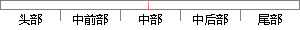

后文中，我们将对这个问题做具体描述。
片段位置图

相似结果|
相似片段 1：退货的影响、顾客退货的原因和顾客退货的处理方式。这些描述和分析为后文的研究做出铺垫，在第i章中我们将对双渠道供应链情境下的顾客退货问题进行具体的建模，通过量化的手段得出双渠道供应链情境下的顾客退货问
|
※ 片段修改建议 ※
近似词参考：- 我们：咱们
- 问题：题目
- 具体：详细
- 描述：描写 形貌
系统自动生成语句：后文中，咱们将对这个题目做详细描写。
注：本片段修改建议为系统自动生成，仅供参考。